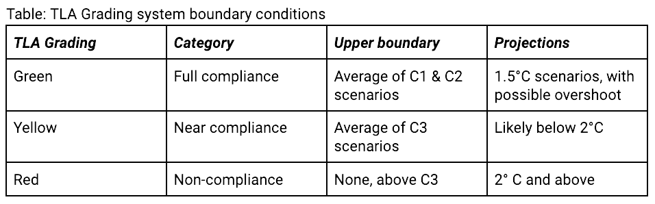

Traffic Light Assessment
Welcome to the Online Web tool of the Traffic Light Assessment! This online tool presents an evaluation of the quality of every country’s Paris Agreement on climate change emission reduction targets, or NDCs*, according to what would amount to a fair share effort by each.
Unlike other assessment tools, this means taking into account a small number of core aspects of fairness or equity when assessing countries’ emission targets, such as past, as well as current, emissions, and the differing capacities of each country.
For example, it is assumed that the wealthiest nations have a greater capacity to cut emissions than the world’s poorest countries. Also, countries responsible for a significant amount of past climate pollution, and with higher than average levels of pollution per person, would need to work harder to bring their emissions into line with the Paris Agreement.
Fairness is important because in a world that is far off track from limiting warming to 1.5ºC, not accounting for these factors would lead to the unrealistic situation whereby the world’s poorest and lowest polluting countries would be relied on to make the emission cuts that the wealthiest and highest polluting countries do not. Likewise, expecting the poorest and most vulnerable developing nations to take on the exact same responsibilities to reduce emissions as the wealthiest and largest economies of the world is manifestly unfair as well as being unrealistic.
This assessment was commissioned by the Climate Vulnerable Forum (CVF), and the results of the Traffic Light Assessment are presented through this user-friendly online Traffic Light Online Web Tool. It offers a map format with toggle parameters, enabling you to explore the results for every country assessed worldwide, and to evaluate the alignment of all Paris Agreement parties’ 2030 NDC emission targets with the 1.5ºC goal.
*NDCs, or “Nationally Determined Contributions” are every Paris Agreement parties’ formal commitment to deliver the temperature goal of the Paris Agreement, which strives to limit to global warming to 1.5ºC.
Reports
Science
Methodology
The Traffic Light Assessment (TLA) evaluates the alignment of every country’s national emissions pledge, known as Nationally Determined Contributions (NDCs), for their compliance with the Paris Agreement (temperature goal and relating equity principles). This assessment is a quantitative interpretation of the equity principles according to one specific equity framework, which itself aims to capture core equity considerations of the extent to which different countries are doing their fair share to deliver the Paris Agreement’s temperature goal.
The TLA evaluates countries’ 2030 NDC targets to limit and reduce climate pollution (measured by CO2 equivalent/ greenhouse gas emissions) in terms of their alignment and compliance with the temperature goal and related equity principles, with virtually every Paris Agreement Parties’ (countries’) NDC being assessed. While overall climate pollution (CO2 and other greenhouse gas emissions) are considered in the TLA, land-use, land-use change and forestry (LULUCF) related emissions are not part of this assessment methodology
The TLA considers the guiding equity principles of the Paris Agreement to include both the principle of equity itself and the principle of common but differentiated responsibilities and respective capabilities (CBDR-RC), in the light of different national circumstances. Per capita national climate pollution emissions over the time-periods of 1950 and 1990 to 2100 are used to reflect equity considerations with the variables of gross domestic product (GDP) or human development index (HDI) specifically used to represent varying capabilities.
The TLA approach includes a discounting of part of past emissions to reflect technological improvements that enable emitting less for a given service over time. The addition of this discounting parameter favours high historical emitters.
Dimensions of the TLA:
- Emissions envelope of responsibility (1950/1990-2100 cumulative): Consideration of the available atmospheric budget for limiting warming to 1.5°C, or higher levels, cumulatively up until 2100.
- Responsibility distribution (equal per capita over the considered time period): The emissions envelope from 1950/90 to 2100 is distributed to countries on a population basis.
- Capability (GDP or HDI): Given substantial variations globally in the capabilities and wealth of countries for taking action, the assessment separately employs both GDP and HDI as variables to account for differences in capability based on economic factors alone (GDP), or the broader human development metric (of the HDI).
TLA GRADING CATEGORIZATION
The TLA “traffic light” system of categorization itself is determined by comparison of countries’ or groups of countries’ 2030 NDC emissions targets in relation to the dynamic fair share burden allocation for those countries/groups as established per the foregoing methodology. The boundary conditions for a ‘green’, ‘orange’ and ‘red’ light are established according to the parameters in the following table, which indicate the corresponding IPCC AR6 warming scenarios used to define each boundary.
The methods for the Traffic Light Assessment has been developed by Robiou du Pont, Yann, Dekker, Mark, van Vuuren, Detlef, & schaeffer, Michiel (2023) in the first submitted paper: “Effects of emissions allocations and ambition assessments immediately based on equity”, presented to the academic journal, Nature Communications (Can be found here: Zenodo https://doi.org/10.5281/ zenodo.8003393)
References
CVF NDC Traffic Light Assessment Report, https://thecvf.org/resources/publications/cvf-ndc-traffic-light-assessment-report
Robiou du Pont, Yann, Dekker, Mark, van Vuuren, Detlef, & schaeffer, Michiel. (2023). Effects of emissions allocations and ambition assessments immediately based on equity (First submission). Zenodo. https://doi.org/10.5281/zenodo.8003393
Contact
For more information you can contact trafficlight@trafficlightclimate.org
Credits
Published by Aroha on commission by the Climate Vulnerable Forum with thanks to the Global Center on Adaptation